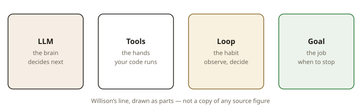

Lesson 0001 · Phase 1: Foundations · ~10 minutes
That sentence compressed two years of industry argument into one line.[1] Unpack it word by word, because every later phase of this course hangs off one of these terms:

Everything else in this field — memory, planning, guardrails, multi-agent systems, evaluation — is a variation or an upgrade on one of those four parts.
Anthropic makes a clean distinction that the industry has converged on:[3]
The test is one question: who is picking the next step — the programmer, or the model? A pipeline that runs summarize → translate → email in a fixed order is a workflow, even if every step uses an LLM. A bot that reads a support ticket, decides to look up the account, decides whether to issue a refund, and then drafts a reply is an agent, because the model chose those steps at runtime.
This distinction is not pedantry — it is a cost/reliability trade-off. Anthropic's first advice: find the simplest solution possible, and only increase complexity when it demonstrably helps.[3] Agents trade your control flow for the model's flexibility, and you pay for it in latency, cost, and failure modes. Practitioners who have shipped agents emphasize that many problems people reach for an agent to solve were scripts all along.[4]
Anthropic’s building block, one step below the loop, is the augmented LLM: the same model call, with retrieval, tools, and memory attached.[3] A single augmented call is not yet an agent. Your code still decides that this call happens, then that one. The agent is what you get when you put that block in a loop and let the model pick the next tool.
Interviews that open on “draw an agent” want this picture first: model in the middle, tools and retrieval around it, then an arrow back into the model labeled “observation.” If you only say “it uses tools,” you have skipped the block the 2024 post is organized around.
This definition is the trunk of the whole course: tool design (Phase 2) is about engineering the hands; reasoning and the loop (Phase 2) refine the habit; guardrails and human-in-the-loop (Phase 3) constrain the job description; multi-agent systems (Phase 4) just connect several brains. Check the roadmap to see where we're headed.
Close this page's top two sections mentally, then answer without scrolling up. Four questions; you get instant feedback. Getting these from memory — not re-reading — is what makes it stick.
1. Which one of these systems is an agent?
2. Anthropic's dividing line: what makes a system agentic rather than a workflow?
3. Complete the field's consensus definition: an LLM agent…
4. A support bot reads a ticket, calls a lookup tool for the account, applies refund policy, then drafts a reply. The model decides at runtime whether to look up, whether to refund, and when it's done. Agent or workflow?
Anthropic — Building effective agents (Dec 2024). Read the sections "What are agents?" and "When to use agents". ~15 minutes; it is the source this lesson compresses. Optional companion: Simon Willison on how the definition converged (5 min).
On paper: write why a tool cannot live inside the model weights. If a quiz item was wrong, rewrite that sentence in your own words before the next lesson.